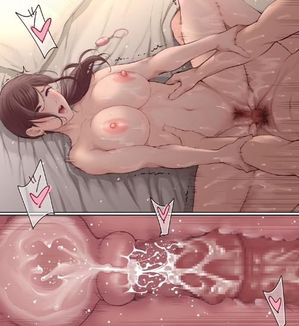

Vào những năm đầu thế kỷ 21, Tổng công ty Vin – Shield đã trở thành tập đoàn thương mại lớn nhất thế giới. 9 trên 10 gia đình sử dụng sản phẩm của công ty. Ảnh hưởng chính trị và tài chính của Vin – Shield hiện diện khắp nơi. Trên thị trường đó là nhà cung cấp hàng đầu về công nghệ vi tính, sản phẩm y học và chăm sóc sức khỏe. Chính nhân viên của tập đoàn có khi chưa biết lợi nhuận khủng khiếp của nó là từ công nghệ quân sự, các cuộc thử nghiệm Gen và vũ khí sinh học. Với quy mô cực lớn, tập đoàn này có rất nhiều trung tâm nghiên cứu lớn nhỏ trải dài trên khắp thế giới.
Trụ sở chính của tổ chức này nằm ở nước V – S khu vực Trung Đông chính là nơi khởi nguồn của việc rò rỉ và phát tán virus lan tràn trên toàn thế giới gây ra đại dịch. Chính họ cũng không thể phản kháng kịp khi đại dịch mau chóng bùng phát, cơ sở chính đã bị tàn phá nên mọi thứ hiện tại tập trung ở thành phố Vin – Future.
Các nhà khoa học ở đây toàn những gã điên cuồng về công nghệ sinh học, họ rất hứng thú khi đại dịch bùng phát trên toàn thế giới, vũ khí sinh học của họ đã thành công ngoài mong đợi. Những tên điên này không tập trung nghiên cứu vacxin mà còn phát triển nâng cấp virus lên các loại tiến hóa và quái vật biến dị. Họ lợi dụng loạn lạc bên ngoài để đưa Zombie và các loài vật bên ngoài về đây ghiên cứu. Rồi sử dụng chiết xuất cường hóa của virus và Tinh Hạch từ các chủng loại này phát triển ra loại thuốc cường thể, tăng sức mạnh mới. Với ảo tưởng rằng họ là thần tiên, là thượng đế, là chủng sinh vật cấp cao có thể sống trên mọi loài và điều khiển sự sống chết của những người khác, tạo ra 1 thế giới mới.
Khi đại dịch xảy ra, tên Vương đã hợp tác với tổ chức này nhằm giữ vững quyền hạn và độc bá ở thành phố Vin – Future. Một công trình đồ sộ nằm dưới lòng đất thành phố với nhiều phòng ghiên cứu, thí nghiệm và các lòng nhốt zombie, các quái thú biến dị. Hai lối ra chính của công trình là ở trung tâm sinh học Vin – Shield và văn phòng sở chỉ huy thành phố.
Nhóm của Hương – Dương cùng đoàn xe lương thực về tới thành phố thì mọi người cùng nhau ăn mừng. Phương cũng kể lại quá trình họ làm nhiệm vụ, những bữa tiệc sex cho Dương, Trinh, Hoa, My nghe.
Dương đến lều chỉ huy của ông Mạnh, bàn giao số lượng lớn vũ khí, thuốc nổ có thể gắn Tinh Hạch và thêm rất nhiều Tinh Hạch Lam cho ông.
Huân: “Waoo, từ đâu cậu có số lượng vũ khí và thuốc nổ lẫn Tinh Hạch này vậy?”
Dương: “Cứ cho là do em may mắn đi ^^”
Ông Mạnh: “Thôi, không cần biết nguồn gốc, cậu Dương đem đến đây với mục đích tốt và hoàn toàn thiện chí, Huân đem số vũ khí và thuốc nổ này vào kho đi, còn tôi đem số Tinh Hạch này qua sở nghiên cứu Vin – Shield xem họ có thể tận dụng tốt nó không”… “à Hương, em dẫn Dương đi chơi vài vòng thành phố và tiếp đãi đội cậu ấy dùm tôi nhé”
Huân, Hương: “Vâng sếp”
Hương dẫn Dương đi, không phải đi dạo thành phố mà dẫn cậu về phòng của mình.
Dương: “Ủa, sao lại về đây, đây là phòng chị mà?”
Hương đi vào phòng, nằm ngã lên giường nhìn Dương mỉm cười: “Ở thành phố này chỉ có nơi này là vui nhất, em tin chị không?”
Dương tiến lại cạnh giường, Hương đang cởi dần lớp áo giáp, vũ khí quăng xuống giường. Hương nắm áo thun ngoài kéo lên cởi ra, cái áo thun dây bên trong cũng bị vướng theo lộ bầu ngực trắng căng tròn, phần bụng eo săn chắc, trên đó còn vết sẹo dài. Chiếc quần Jean bó đã bị kéo xuống hơn nửa mông, bên trong quần lót màu đen chữ V càng tôn dáng Hương lên nhiều lần. Dương đưa tay sờ lên vết sẹo trên bụng cô.
Hương: “Nè, chỉ thích sờ chỗ đó thôi à”
Dương cười: “Em thích sờ tất cả, được không?”
Hương chụp tay Dương kéo sát lại gần cô: “Được, nhưng mà em phải nói cho chị biết em đã lấy vũ khí và tất cả cái đó ở đâu, nếu giữa hai ta không có bí mật thì mọi chuyện khác cũng có thể”
Dương ngần ngại, đây có phải dì Hương của cậu, hay là cô ấy đang cố gắng moi thông tin từ cậu. Dương suy nghĩ lại, ở thế giới nào cậu cũng luôn tin con người Hương cơ mà, tại sao bây giờ cậu lại do dự. Dương nhìn Hương sâu vào mắt Hương lần nữa, cậu thấy được sự ấm áp đó. Dương quyết định ngồi kể lại mọi việc cho Hương nghe.
Hơn tiếng đồng hồ trôi qua, Hương đi từ ngạc nhiên này đến ngạc nhiên khác, từ thế giới bên kia, từ những nhiệm vụ, những gì Dương đã trải qua.
Hương: “Vậy dì Hương bên đó và cậu…”
Dương gật đầu.
Hương: “Vậy em tiếp cận chị là vì để làm nhiệm vụ hay là vì chị giống người đó?”
Dương: “Không, không giống như chị nghĩ đâu”
Hương kéo áo lại, đẩy Dương ra khỏi phòng: “Xin lỗi, chị không giúp em việc này được đâu, chị cần thời gian suy nghĩ”
Dương không thể ép buộc Hương, cậu không bao giờ có thể làm khó cô, Dương buồn bã đi về. Bên trong phòng, Hương đứng chết trân, phút chốc cô chạy ra mở cửa, nhìn theo hành lang, Dương đã đi mất. Hương đóng cửa phòng lại ngồi dựa vào cánh cửa, nước mắt cô đang rơi, ở thế giới này Hương cũng là 1 cô gái cô đơn, luôn mong mỏi một tình yêu của đời mình, cớ sao số phận lại trêu đùa cô như vậy. Hương đã thích Dương ngay từ lần đầu thấy cậu ở nhà máy Tam Hiệp, vậy mà… Là vì nhiệm vụ ư… Là vì cô rất giống người ấy nên cậu tìm cô để khỏa lấp ư. Hương là cô gái mạnh mẽ, nhưng nỗi cô đơn dai dẳng kéo dài đeo bám lấy tâm trí cô, liệu cô còn có thể mạnh mẽ được bao lâu.
“Cốc… cốc… cốc”
Tiếng gõ cửa bên ngoài, đôi mắt Hương như sáng lên, cô chưa bao giờ vui mừng đến như vậy, cô lau nước mắt trên mặt, chỉnh quần áo và tóc lại rồi đứng lên mở cửa ra…
Ông Mạnh: “Nè, mở cửa thôi cũng lâu thế, lấy giáp và vũ khí đi, có việc rồi”
Hương đứng khóc như mưa khi bên ngoài không phải là Dương mà là ông Mạnh.
Ông Mạnh: “Này này, sao thế, anh không biết xử lý tình huống này đâu đấy”
Hương dựa mặt vào vai ông Mạnh rồi khóc, ông Mạnh đành đưa tay vỗ lưng cô an ủi.
Ông Mạnh: “Là chuyện liên quan đến cậu Dương đúng không, vừa nãy thấy hai người vẫn vui vẻ mà, cãi nhau à, đừng buồn nữa…”
…
Ông Mạnh: “Haizz sao tui già rồi mà còn dính vào chuyện của đám thanh niên thế này chứ, thôi nín, có việc quan trọng, chuyện cậu Dương để tôi nói chuyện với cậu ấy sau”
Hương đã khóc thoải mái, cô lau nước mắt: “Dạ không cần đâu, em không sao, chuyện của em em tự xử lý được”
Hương đi vào phòng đeo giáp và trang bị lên, cô cầm khẩu lục nhìn, lên đạn kiểm tra rồi bước dài đi ra.
Hương: “Đi thôi anh”
Ông Mạnh cười lắc đầu, rồi nghiêm túc đi, trên xe ông kể lại chi tiết cho Huân và Hương nghe.
Ông Mạnh: “Lúc nảy khi đi qua sở nghiên cứu của Vin – Shield anh đã vô tình phát hiện 1 bí mật”
Ông Mạnh đưa ra 1 bản đồ căn cứ dưới lòng đất và 1 số tài liệu liên quan rồi tiếp tục câu chuyện.
Ông Mạnh: “Tyrant là dự án bên V – S tiêu tốn hàng ngàn tỷ đô la để tạo ra một cỗ máy giết người đáng sợ từ Virut, họ thử nghiệm virus đột biến trên cơ thể con người”
Ông Mạnh: “Đây là hình ảnh vật thí nghiệm mới nhất, họ gọi tên quái vật này là Nemesis, con quái vật này thân hình khổng lồ cao gần 3m, sở hữu khả năng phục hồi vô tận, đặc biệt nó có trí tuệ gần giống với con người có thể sử dụng được các vũ khí được tạo ra riêng cho hắn”
Huân: “Trời, họ tạo ra con quái vật này làm gì cơ chứ”
Hương: “Dĩ nhiên là muốn sản xuất hàng loạt, thành 1 đội quân để họ sai bảo và thống trị thế giới này”
Huân: “Anh Mạnh, cụ thể là gã này mạnh thế nào?”
Ông Mạnh: “Nhấc bổng xe tăng, 1 tay có thể nóp nát đầu một người trưởng thành, khung xương rắn chắc như thép, cơ thể và da bên ngoài có thể tự tái tạo, nguy hiểm nhất là bọn chúng biết sử dụng vũ khí và nghe theo mệnh lệnh của V – S”
Huân: “Chuyện này quá sức tưởng tượng rồi, vậy… vậy không lẽ virus làm tràn lan đại dịch cũng là từ tổ chức này?”
Ông Mạnh: “Có thể…”
Huân: “Vụ này nghiêm trọng đấy sếp, sao anh không gọi nhóm Dương đi cùng”
Ông Mạnh nhìn Hương: “Có lẽ bây giờ không tiện lắm, chúng ta trước mắt cứ lẻn đột nhập vào trong tìm hiểu đã”
…
Ở chỗ Dương, cậu đang buồn bã lủi thủi đi về phòng. My đang đứng trước cửa phòng đợi.
Dương: “Ơ, sao em ở đây, có việc gì à?”
My: “Có việc mới được ở đây sao?”
Dương: “Không, em vào đi, hì”
My bước vào phòng ngồi lên ghế: “Hôm nay về sớm thế, lại vụt mất con mồi rồi à?”
Dương gãi đầu: “Em làm như anh là con thú hoang không bằng”
My: “Ha ha, nhìn cái mặt anh là em biết rồi, mồi ngon trước mặt mà lại vuột mất chứ gì?”
Dương quỳ xuống trước ghế của My nhìn cô: “Mồi ngon đang ở ngay đây nè”
My xô Dương ra: “Hứ… anh như thế nào em còn không rõ, trước đây không biết như thế nào, từ nay về sau, đi đâu, làm gì đều phải nói cho em, rõ chưa?”
Dương: “Tuân lệnh bà xã”
My đứng lên đi lại gần Dương nghiêng đầu nhìn Dương: “Thế hồi nãy đi đâu?”
Dương: “Anh… anh đi qua chỗ bác Mạnh giao vũ khí và thuốc nổ”
My nắm cổ áo Dương: “Còn đi đâu nữa?”
Dương: “Ờ… thì qua chỗ chị Hương một chút”
My: “Hừ, một chút là mấy cái”
Dương: “Không, chưa có làm được gì, anh thề, nảy anh về em cũng nhìn mặt anh đoán ra còn gì”
My: “Hừ… tha cho anh đấy”
Dương ngồi lên giường ôm My ngồi vào lòng: “Nhưng mà anh không tha cho em”
My: “Anh đấy… đừng đi làm nhiệm vụ đó nữa, tích lũy vũ khí và thuốc nổ như thế là quá đủ rồi”
Dương: “Được, anh để mọi người làm, anh không làm nữa”
My: “Hứa rồi đó, còn nữa, sau này mấy nhiệm vụ khác cũng phải cho em xem, em sẽ nghĩ cách tốt nhất cho anh làm”
Dương: “Ok… ok… còn gì nữa không?”
My: “Tạm thời chưa nghĩ ra…”
Dương ngửi hương thơm trên mái tóc dài của My, áp mặt vào lưng My: “Anh thì hết nghĩ được gì rồi”
Dương vuốt lên tóc My rồi hôn, kéo My gẫn thêm chút hôn vào sau cổ và gáy của My.
My: “Ưmmm… nhột lắm… aaa aa a… em nổi hết da gà rồi nè… đừng mà… hi… hi… đáng ghét… ui… ui… buông em ra…”
Dương hôn tới tấp lên người My còn kéo áo cô lên hôn liếm vào eo, vừa cười giỡn vừa lăn lộn trên giường. Lát sau không gian tĩnh lặng, Dương nằm đè lên người My, hai người nhìn nhau, Dương thở nhanh, My cũng không cười giỡn nữa, mặt ửng đỏ nhìn Dương. Gương mặt gần áp lại gần, môi chạm môi, hai người ôm đầu nhau rồi hôn.
Hai người cứ cuốn vào nụ hôn đó, lần lượt từng món đồ trên người cả hai được cởi ra. Cơ thể áp sát, da thịt chạm vào nhau, mơn trớn cơ thể của nhau.
Sự quấn quýt, mơn trớn, dính chặt nhau đó làm cơ thể họ bùng nổ, màn dạo đầu không cần cầu kỳ, cả hai nóng hực người không kiềm chế nổi nữa chỉ muốn hòa làm một.
Dương lòn tay xuống cầm cu rà vào lồn My, My ưỡn người lên cho cậu dễ đẩy vào. Con cu Dương chui vào khe nước đang chảy, nó đi sâu vào tận trong hang nước đó. Dương rút nhẹ nó lên rồi lại đẩy vào, hai cơ thể trườn lên xuống cọ xát vào nhau. My vò ôm vào đầu Dương, đè vào cặp vú của mình, cơ thể cô cũng nhịp nhàng ưỡn lên xuống hòa nhịp.
Lát lâu sau…
My: “Ưmm… ơ… ưm… ơ… em ra… em ra mất… em sướng quá… từ đã… em không kiềm được… hơ… hớ… Áaaaa… hư… hư… anhhhhh…”
Dương đâu thể dừng lại, cậu đang rất sướng và hạnh phúc, cái rùng mình của My làm cậu càng hưng phấn, cậu gòng lên rồi con cu giần giật bắn từng đợt tinh trùng vào trong. My cảm nhận được dòng tinh trùng ấm áp đó, cô rùng mình lên lần nữa trong sung sướng, nước lồn cô trào ra từng đợt.

My: “Ơm… ơ… hư… nấc… hix… nấc… ưmmmm… anh nhìn em làm gì… em ngại lắm… hix… nấc…”
Dương mỉm cười nhìn My, nhớ lại một câu hỏi anh từng hỏi trong thế giới của cậu, Dương hỏi luôn.
Dương: “Sao mỗi lần em lên đỉnh em lại nấc cục vậy ^^”
My ôm mặt xấu hổ: “Ưmmmm… em không biết đâu, anh đừng hỏi nữa, ngại lắm”
Dương không ngờ My cũng trả lời 1 câu y chang trong quá khứ, cậu ôm hôn lên trán, lên mặt rồi lên môi My lòng ngập tràn hạnh phúc.
Dương: “Anh tắm cho em rồi mình làm hiệp nữa nhé”
My lắc đầu: “Thôi… để em tự tắm… anh vô trước đi… Áaaa. Anhhh… buông em ra… té… té em…”
Dương: “Nếu sợ té thì ôm cổ anh chặt vào, đừng có giãy nữa”
“Cốc… cốc… cốc…” tiếng gõ cửa bên ngoài phòng và tiếng gọi Dương vọng lên.
Mina: “Anh Dương, anh Dương có trong đó không…”
Cuộc vui bị gián đoạn, Dương và My vội mặc đồ vào rồi Dương mở cửa ló đầu ra.
Dương: “Ủa, Mina hả, sao tìm anh khuya thế?”
Mina nhìn nhìn vào trong khe cửa: “Ừ… em tìm anh có việc, anh đang ở với ai à?”
Dương: “Có việc gì em nói đi”
Mina: “Em không vào trong được à?”
My bực bội vì hai người cứ đưa đẩy qua lại, cô mở rộng của đứng khoanh tay: “Nửa đêm nửa hôm lại phòng bạn trai tôi còn đòi vào trong làm gì? Không có liêm sỉ à?”
Mina ngượng ngùng vì lời chất vất của My: “Dạ… mình… mình chào bạn, mình có việc quan trọng thật, mình xin lỗi đã làm phiền khuya thế này”
Dương nhìn ánh mắt Mina hình như đang rất nghiêm túc và lo lắng, cậu ôm vào eo My nắn nắn, My nhìn Dương thấy cậu đang ra hiệu nên My không nói nữa. Dương mở cửa phòng ra mời Mina vào.
Mina nhìn quanh đóng cửa phòng lại rồi chưa kịp ngồi xuống đã nói liên tục.
Mina: “Anh Dương, lúc chiều em thấy bác Mạnh, anh Huân và chị Hương đi vào viện nghiên cứu, lúc đó em từ lò rèn ra thấy nên tò mò theo thôi, vì biểu hiện của mọi người cứ lấp ló lén lút nên em tò mò thôi…”
Dương: “Bình tĩnh, kể chuyện có đầu có đuôi rõ ràng xem nào, không cần phải giải thích chuyện em có tò mò hay không đâu”
My đưa ly nước cho Mina, cô uống một hơi rồi kể tiếp chuyện bên trong sở nghiên cứu. Nhóm ông Mạnh đã bị người ông Vương phát hiện và bắt. Mina lén đi ra lại vô tình nhặt được tài liệu của ông Dương thì rất hoảng hốt khi biết bí mật bên trong căn cứ này. Về nhà, cô lo lắng suy nghĩ không biết phải làm thế nào, nhóm ông Mạnh là đội quân mạnh nhất ở đây bảo vệ mọi người, bây giờ ông Mạnh bị bắt, ông Vương và mấy tên khoa học điên này là thế lực quá đáng sợ, cô không biết phải nói với ai, cuối cũng cô chọn Dương, ngay lập tức trong đêm đi tìm Dương.
Dương nghe xong thì nói với My: “Em đi gọi mọi người tập trung lại, lấy vũ khí theo”
My chạy đi ngay, Dương cũng lấy vũ khí và cùng Mina đi hội họp với mọi người tại lều chỉ Huy của ông Mạnh.
Mina để bàn đồ của sở nghiên cứu lên bàn rồi hướng dẫn chi tiết.
Mina: “Đây là toàn bộ sơ đồ em biết, ngay chỗ này là lối vào căn cứ dưới lòng đất, còn bên dưới thế nào thì em hoàn toàn không biết”
Dương: “Được rồi, mọi người có chủ ý gì không”
Long: “Vậy đây mới chính là mấu chốt của đại dịch zombie, có thể bên trong có vacxin kết thúc được đại dịch này cũng nên”
Trinh: “Vào trong thì sẽ biết thôi, quan trọng là kế hoạch tấn công vào, còn phải cứu nhóm bác Mạnh”
Phương: “Kế hoạch có lẽ không cần đâu, họ đâu biết sức mạnh của bọn mình, còn Dương nữa, với tốc độ đó vừa diệt đám bảo vệ trong đó vừa cứu người chắc không vấn đề gì đâu”
Dương cười: “Vậy kế hoạch là xông thẳng vào thôi…”
My: “Ok, anh vào trước, mọi người lập tức theo sau hỗ trợ, còn cái con quái vật Nemesis này ai gặp thì tùy cơ ứng biến nhé”
Mọi người lên xe đi vào trung tâm thành phố, xông thẳng qua hàng rào viện nghiên cứu rồi ập vào trong. Đám lính và bảo vệ mau chóng bị họ tiêu diệt. Theo một hàng lang dài họ đi sâu vào lòng đất, các cửa thép phòng hộ đều bị Dương phá hủy tiến vào. Dương mở kỹ năng Nhanh Nhẹn rồi lướt đi ra soát bên trong mau chóng tìm ra nơi giam giữ ông Mạnh, Huân, Hương và mọi người. Những nhà khoa học trong đây yếu ớt chống cự. Tên Vương cùng thư ký của hắn đã nghe báo động lập tức mở lồng thả con Nemesis ra.
Con quái vật hùng hổ tiến lên, cầm súng tên lửa to trong tay tấn công nhóm Dương. Nhưng con quái này so với đám zombie tiến hóa, và quái vật biến dị bên ngoài chả là gì, nếu là đội quân giống như thế này còn khiến nhóm Dương chùn bước, 1 con là quá ít. Hoa cầm magnum nã cho vài viên, ngọn lửa tím bao trùm con quái vật thiêu đốt thành tro tàn.
Mọi thứ trong viện nghiên cứu khổng lồ dưới lòng đất này ngoài quái vật và zombie chả có gì giá trị, vacxin cũng không có, họ phá hủy tất cả rồi đi ra ngoài.
“ĐÙNG… ĐÙNG… ĐÙNG…”
Hàng loạt tiếng rít của pháo sáng bay lên không trung rồi nổ liên tiếp. Tiếp sau đó là tiếng còi báo động rền vang cả thành phố.
Ông Mạnh, Huân, Hương và cả nhóm người của Dương và những quân nhân khác gấp rút tập trung về lều chỉ huy. Ông Mạnh sau khi nói chuyện bộ đàm thì thông báo với mọi người bên ngoài tường thành là hàng ngàn, có thể hàng triệu Zombie, quái thú đang tiến đến như cơn lũ. Đây mới chính là nguy hiểm mà hệ thống đã cảnh báo Dương.
Dương: “Bác Mạnh, chúng ta còn thời gian bao lâu?”
Ông Mạnh: “Rạng sáng mai chúng sẽ đến sát tường thành, Dương đi theo tôi”. “Huân, Hương, hai người dẫn đội thành lập phòng tuyến trên tường thành, đem tất cả vũ khí đạn dược có trong kho theo”
Huân, Hương: “Vâng sếp”
Dương dặn dò mọi người trong nhóm ở lại đây chờ cậu rồi cậu đi theo ông Mạnh đi đến sở chỉ huy thành phố. Đến nơi, tên Vương và thư ký của hắn đang nháo nhác soạn đồ, vàng bạc châu báu của hắn lên trực thăng riêng chạy trốn. Đến bây giờ ông Mạnh mới rõ được bộ mặt thật của tên Vương. Ông cho lính bắt trói hắn và nhân tình hắn nhốt vào phòng rồi cùng vài quan chức cấp cao còn lại và Dương bàn kế hoạch.
Sau hồi lâu bàn luận, với hình ảnh của máy bay do thám gửi về, lượng quái thú và Zombie khổng lồ, còn biến dị và tiến hóa cấp cao. Lớp tường thành này chỉ là ngọn cỏ trên đường của chúng đi, ông Mạnh thất vọng và bất lực đập bàn.
Dương lúc này mới lấy trong túi ra bản đồ của thành phố và có nhiều đánh dấu vẽ hệ thống trên đó, bản đồ này là của bố Minh và chú Tuấn dầy công nghiên cứu và vẽ lại hướng dẫn cho Dương. Dương đặt bản đồ lên bàn rồi bắt đầu.
Dương: “Đây là thành phố Vin, theo lời tên Vương ngoài biển Đông có chiến hạm và tàu ngầm và các đảo là căn cứ tạm của Vin – Shield”
Một quan chức khác: “Ý cậu là muốn chúng ta rút đi giống tên Vương, chúng ta không đủ phương tiện ra biển, và căn bản các căn cứ nhỏ ngoài đó không đủ để chứa toàn bộ người dân”
Dương: “Không, tôi chỉ cần sự hỗ trợ từ quân đội từ các chiến hạm và tàu ngầm đó. Các chiến hạm gần hết nhiên liệu đều tập kết ở cảng lớn Victoria, chúng ta có thể tận dụng máy bay, pháo và các vũ khí khác”
Ông Mạnh: “Tôi đã tính rồi, cao lắm chỉ làm chậm đoàn quái vật này 1 chút thôi”
Dương: “Đúng, nhưng nhiêu đó là đủ, chúng ta hãy đặt boom và toàn bộ thuốc nổ vào chỗ này, chỗ này và rải rác trong thành phố, một khi tường thành cổng hướng Nam sụp đổ, quái vật ập vào trong thành phố chúng ta sẽ cho nổ và sử dụng boom hạt nhân từ tàu ngầm bắn vào giữa thành phố”
Quan chức: “Cậu điên à, cậu định tự sát à?”
Dương: “Đây, hướng Tây của thành phố là dãy núi cao, địa hình phức tạp, chúng ta sẽ cho dân rút theo vị trí này đi vòng theo đường núi về khu vực nhà máy Tam Hiệp”
Quan chức: “Vậy cũng phải có người ở lại thành phố đánh chặn tường thành và cho boom nổ”
Dương trầm ngâm rồi quả quyết: “Đội của tôi sẽ đánh chặn ở cửa và…” Dương nhìn về phía ông Mạnh.
Ông Mạnh: “Lính của tôi sẽ hội trợ cậu”
Quan chức: “Mọi người điên rồi, ở lại là tự sát đó”
Ông Mạnh: “Không ở lại thì tất cả chết, đây có lẽ là cách tốt nhất rồi”
Nói xong các quan chức và ông Mạnh bàn bạc nhanh lại rồi gọi điện đàm cho quân đội đang đóng quân ngoài cảng.
Ông Mạnh: “Sở chỉ huy thành phố Vin – Future đây, alo alo”
Tàu sân bay chỉ huy: “Báo cáo, nghe rõ, xin đợi lệnh”
Ông Mạnh: “Cho toàn đội Hải Âu xuất kích, dùng toàn bộ hỏa lực đánh chặn 10 dặm hướng của Nam thành phố. Liên hệ đội tàu ngầm chuẩn bị tên lửa hạt nhân đợi lệnh”
Tàu sân bay chỉ huy: “Rõ”
Từ tàu sân bay và cảng hàng loạt Su – 57 bay vút lên bầu trời, tiếng động cơ phản lực nổ xé gió mây vượt qua tốc độ âm thanh thẳng hướng đã định, thành đoàn bay tới. Từ xa trên bầu trời hàng loạt máy bay tiêm kích “sát thủ” Su – 57 xuất hiện chi chít như đàn chim từ biển vào. Bên ngoài 10 dặm về hướng Nam thành phố, những chiếc Su – 57 xả đạn và tên lửa hàng loạt vào biển Zombie. Tiểng tên lửa bay, tiếng nổ xé toạc không gian, tiếng gầm rú của đám quái vật, zombie, trong biển lửa boom đạn mùi khói, mùi cháy khét nghi ngút bay lên.
Ở thành phố, ông Mạnh và Dương đã cùng đội và mọi người đến tường thành.
Ông Mạnh cầm bộ đàm: “Cho đội “Cua Đồng” vào vị trí.”
Hàng trăm chiếc xe tăng từ hầm đất chui lên khỏi chỗ ngụy trang, xung quanh chân tường thành. Pháo tự hành, tên lửa, súng và các hỏa lực khác cũng đã sẵn sàng.
Dương: Al, mày thấy tao và mọi người đã chuẩn bị mọi thứ chứ, mày có thể cho tao nhận trước không gian nhẫn được không?
Al: Được, nhưng bạn phải giết được 1 con zombie tiến hóa hoặc quái vật biến dị cấp cao nhất, thu được Tinh Hạch Đỏ.
Dương: Má… được rồi. Mày phải sẵn sàng đó.
Al: Ok, tôi luôn sẵn sàng.
Dương lập tức nói rõ lý do và phân công việc cho nhóm rồi quay qua ông Mạnh.
Dương mở bộ đàm gọi cho Hương: {Alo alo}
Hương: {Gì đó nhóc?}
Dương: {Chị và đội đưa mọi người đi an toàn nhé}
Hương: {Làm gì mà như trăn trối vậy, cậu và mọi người cũng phải nhanh chóng rút an toàn đó}
Dương: {Chị an tâm, em sẽ đưa mọi người đi qua thế giới em bằng không gian của chiếc nhẫn, có lẽ em sẽ không được gặp mọi người ở đây nữa đâu, chị mau chóng lấy chồng và sống thật hạnh phúc nhé.} Dương tắt máy.
Hương: {Alo… alo} Hương gạt nỗi buồn rồi tiếp tục dẫn đoàn người đi xa dần thành phố.
Cửa thành mở ra, nhóm Dương cùng đoàn xe tăng tiến thẳng vào giữa biển rừng Zombie. Vừa tiến tới đạn pháo, súng máy vừa bắn liên tục. Hai chiếc xe của nhóm Dương vừa đến nơi thì quay đầu, trên thùng xe phía sau Trinh ngồi cùng khẩu Gatling. Tiếng 6 nòng rít lên xoay rồi hàng loạt đạn cùng ánh sáng lam bắn ra, các cô gái cũng nã súng liên tục xuyên thủng vào đoàn zombie và quái vật một đoạn dài. Dương, Nhã, Long, My, Linh cầm vũ khí xông thẳng vào trong.
Như một mãnh tướng giữa chiến trường, Long cùng cây thương đánh dạt hàng loạt Zombie mở đường, Nhã, Linh và My phía sau dọn dẹp và xử lý lũ quái vật biến dị và zombie tiến hóa cấp cao.
Vào được đoạn sâu, một con quái vật bò cạp biến dị to lớn như tòa nhà ầm ầm bước đi. Dương xác định mục tiêu rồi huýt sáo. Nanh Trắng phóng tới cho Dương leo lên lưng rồi gầm lên chạy về phía trước.
Nanh trắng phóng tới con bò cạp cắn mạnh vào lớp giáp 1 bên chân con quái thú, cặp nanh to sắt nhọn của Nanh Trắng cắm xuyên qua lớp giáp kim loại dày của quái thú. Nó ré lên rồi vùng cái đuôi chĩa hướng Nanh Trắng cắm xuống, Nanh trắng nhảy phốc né qua 1 bên. Dương từ bên hông nhảy lên cao dùng kiếm chém xuống, lưỡi kiếm lóe lên ánh sáng Lam rồi xé rách 1 đường trên giáp con quái vật.
Long, Nhã, My, Linh cũng vừa kịp tới, Long phóng lên ghim thẳng cây thương vào đầu con bọ cạp, Nhã vút qua ngang Long rồi chém đứt đuôi con bò cạp, My và Linh đang đánh và né hai chiếc càng sắn bén của con thú. Dương bật lên cao lộn 1 vòng rồi canh ngay cây thương của Long đạp xuống 1 phát nữa ghim sâu vào đầu con quái, nó ré lên rồi toàn thân bất động đổ ịch xuống đất.
Từ trên không, 1 cỗ xe cuốc khổng lồ bay tới, cả nhóm nhảy né ra nhìn lại, 1 tên Zombie tiến hóa khổng lồ như tòa nhà cao ốc, tay đang dỡ thêm chiếc xe tải lớn ném tới. Dương phóng nhanh thanh kiếm, thanh kiếm lao vút đi ghim vào mắt con zombie khổng lồ, nó đưa tay rút thanh kiếm từ mắt ra rồi ném qua 1 bên. Long cũng phóng luôn cây thương nặng của mình vào chân con zombie, cây thương cũng chỉ làm nó đi chậm hơn 1 chút. Phía sau hàng loạt phát đạt pháo từ xe tăng bắn tới ầm ầm, nhưng cũng như muỗi chích inox. Dương chụp thanh kiếm của My rồi xẻ vào đầu con bò cạp dưới đất lấy viên Tinh Hạch Đỏ ra rồi hét lớn kêu mọi người rút.
Về tới cổng thành Dương mau chóng đến bệ pháo tự hành gắn viên Tinh Hạch Đỏ vào.
Dương: “Bác Mạnh và mọi người tập trung ở lều chỉ huy đi, con quay lại ngay”
Dương bật Nhanh Nhẹn lướt đi lấy trong nhẫn ra tất cả Tinh Hạch Lam đến chỗ gài boom mìn nhấn viên Tinh Hạch Lam vào. Xong xuôi cậu quay lại lều chỉ huy.
Lúc này ngoài cổng thành thủy triều Zombie đã tới, hàng loạt tiếng B41, pháo, súng tiểu liên, 12ly7 nổ ầm ầm. Pháo tự hành cũng rít lên rồi xả đạn liên tục, những viên đạn cuộn quanh là ánh lửa đỏ rực sức mạnh của viên Tinh Hạch Đỏ. Pháo đạn bắn như mưa và vũ bão cuối cùng cũng khiến con Zombie to lớn đó đổ xuống, từ xa, làn khói lửa tan dần, hàng loạt hơn chục con zombie to lớn như vậy đang lù lù tiến tới. Đạn pháo cũng cạn dần bắn đến những viên cuối cùng thì đoàn quân Zombie cũng ập vào phá tường thành lăm lăm xông vô trong.
Tại lều chỉ huy Dương đưa mọi người và Nanh Trắng vào nhẫn không gian.
Dương: “Bác Mạnh, bác hãy tin con, hãy vào trong chiếc nhẫn này, con sẽ đưa bác thoát đi đến một thế giới khác”
Ông Mạnh cầm hộp nút kích hoạt boom và bộ đàm trên tay: “Con đi đi, đây mới là quê hương của bác, con hiểu ý bác chứ, bác rất vui vì được chiến đấu cùng con và mọi người”
Dương đứng nghiêm đưa tay lên trán chào ông Mạnh.
Dương: Al, đưa tao quay về…
Al: Đang tiến hành.
Dương bước qua cánh cổng không gian thì ông Mạnh cầm bộ đàm.
Ông Mạnh: {Alo, bắn tên lửa đi}
Từ tàu ngầm một khoang lớn mở ra, chiếc tên lửa mang đầu đạn hạt nhân được bệ phóng dựng thẳng lên rồi bay lên không trung. Vài phút sau, giữa biển Zombie và quái vật ông Mạnh bấm nút đếm ngược 10 giây cho nổ boom mìn, phía trên bầu trời là quả tên lửa đang lao tới giữa trung tâm thành phố.
“UỲNH…”
Đầu đạn hạt nhân và boom mìn hoàng loạt phát nổ. Quả cầu lửa khổng lồ hình thành ngay trung tâm thành phố Vin – Future có nhiệt độ hơn 7000 độ C, không khí bị phản ứng hạt nhân làm nóng lên hàng triệu độ. Quả cầu lửa thiêu rụi mọi sinh vật trong bán kính 1, 5 km. Sau đó, một sóng xung kích có sức mạnh khủng khiếp phá hủy tất cả các tòa nhà và sinh vật xung quanh bán kính 2km, cùng với cột khói đen khổng lồ hình nấm bao phủ toàn bộ thành phố.
Hương cùng đội và những người dân ở khuất xa sau ngọn núi cũng nghe thấy tiếng nổ và đám khói đen khổng lồ đó. Họ mở nón, đứng nghiêm, hướng mắt về thành phố.
Hương cùng đoàn người đi xa dần theo hướng nhà máy Tam Hiệp.
Sau nhiều ngày, trên đường đi, Hương gặp 1 cậu thanh niên trên tay là ngọn giáo nhọn, đeo ba lô với vài món linh tinh. Hương cho đoàn dừng lại, nước mắt cô đang rơi, đó là Dương, không phải Dương mà cô từng gặp, mà là Dương của thế giới này.
Sau khi Dương dùng nhẫn đi qua cổng không gian lần cuối, hệ thống đã trả lại Dương của thế giới này, cậu thanh niên trẻ 18 tuổi hoàn toàn không hiểu gì, chỉ chớp mắt cậu đang ở nhà với ba mẹ thì mọi thứ xung quanh biến đổi, khung cảnh như hoàn toàn đổ nát từ lâu, xung quanh thị trấn toàn là xác Zombie và lũ quạ. Cậu từng biết về zombie qua phim truyện, nhưng mà trong trấn đồ ăn thức uống hình như đã bị dọn sạch, zombie cũng đã bị ai đó giết hết. Cậu nhặt 1 thanh gỗ làm vũ khí, tìm được vài thứ ăn được bỏ vào ba lô rồi đi ra đường lớn tìm về hướng nhà máy Tam Hạp hy vọng ở đó còn lương thực. Ra tới đường lớn thì cậu gặp đoàn người và xe cũng đang đi về nhà máy. Cậu đứng nhìn 1 lúc, hình như trên chiếc xe đằng xa có 1 cô gái đang đứng nhìn cậu, cô gái đó có lẽ là chỉ huy của đoàn quân này. Cô gái đó đang ra hiệu mọi người dừng lại, cô ấy đang khóc ư, tại sao thế? Dương còn chưa hiểu thế giới cậu ở đang xảy ra chuyện gì…
Hương lao tới ôm chầm lấy Dương rồi đưa cậu lên xe trong sự ngơ ngác của cậu thanh niên. Hương đã nghe Dương kể về thế giới song song, về những điều kỳ lạ, cô từng thắc mắc trong đầu là nếu cả hai thế giới đều có người giống nhau, vậy thì Dương của thế giới này đâu? Cô đã có câu trả lời của mình, cô mỉm cười ôm tay ngả đầu vào vai Dương.
Thành phố mang tên tương lai đổ nát thành tro tàn, nhưng nó mang đến tương lai mới cho con người ở thế giới này. Từ nhà máy Tam Hiệp và thị trấn nhỏ của Dương, dưới sự lãnh đạo của đôi vợ chồng trẻ Dương – Hương: Một thành phố mới được sinh ra và phát triển mạnh mẽ cho đến sau này.